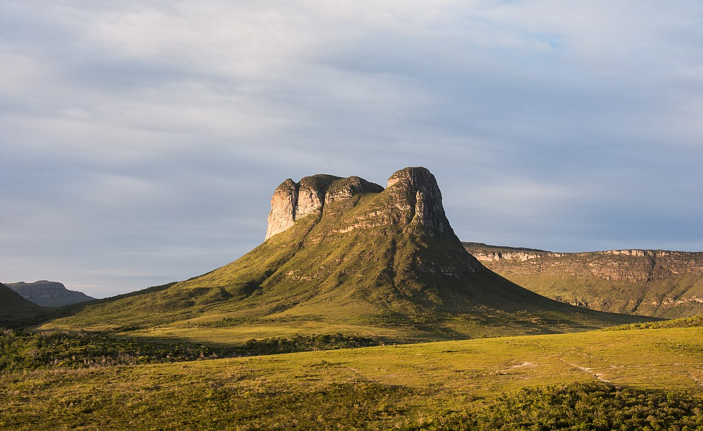
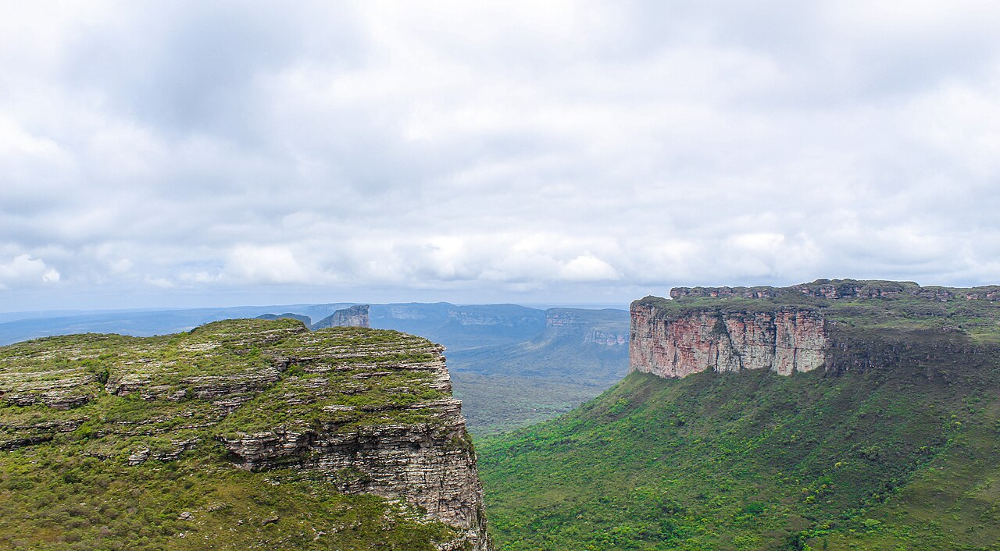
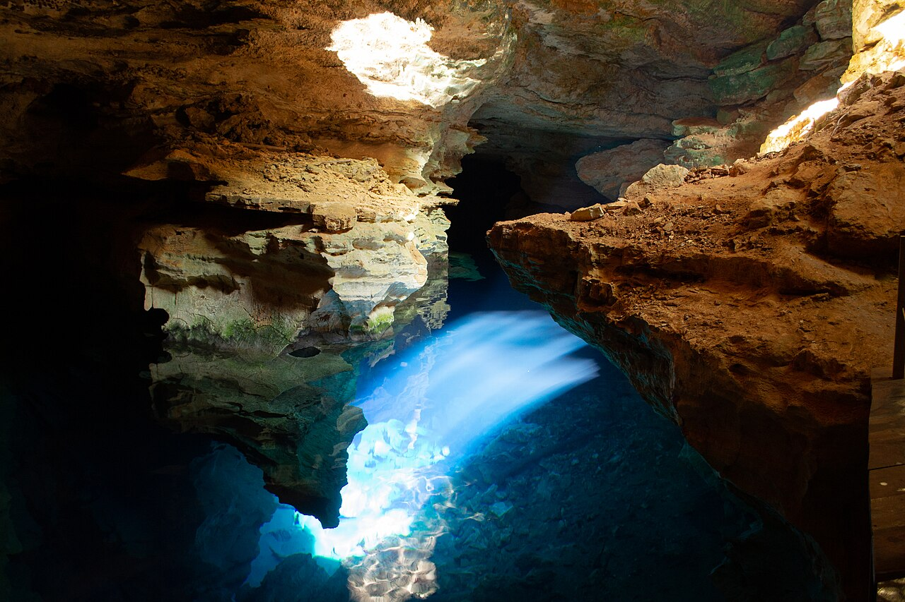

ECOTURISMO E AVENTURA
Chapada Diamantina
Cachoeiras, trilhas, poços cristalinos e paisagens monumentais em uma experiência feita no seu ritmo.
VALOR DE REFERÊNCIAR$ 1.619 por pessoa
Conhecer esta experiência →A EXPERIÊNCIA
Uma imersão entre serras, água e história.
Você alterna caminhadas por paisagens monumentais, banhos em rios e momentos tranquilos na cidade de Lençóis. O roteiro pode combinar contemplação e aventura conforme o seu perfil.
Roteiro sugerido
Chegada e circuito do Serrano; Morro do Pai Inácio, Pratinha e Lapa Doce; Poço Azul, Poço Encantado ou Cachoeira da Fumaça.
O que está incluso
- Transfers e passeios definidos na proposta
- Guias, condutores e motoristas experientes
- Entradas e logística dos atrativos contratados
- Seguro aventura
O que não está incluso
- Aéreo e hospedagem, salvo quando indicados
- Refeições não previstas no roteiro
- Despesas pessoais
Datas, duração, serviços e valores podem variar conforme disponibilidade e composição da viagem. A confirmação acontece antes da reserva.
Pronto para viver a Chapada?
Quero receber uma proposta →FOTOS DO DESTINO
O que espera por você


